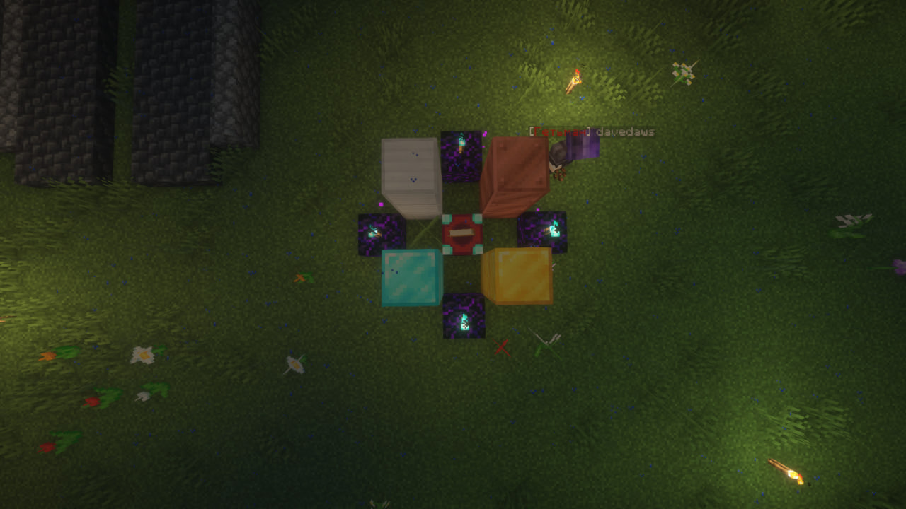
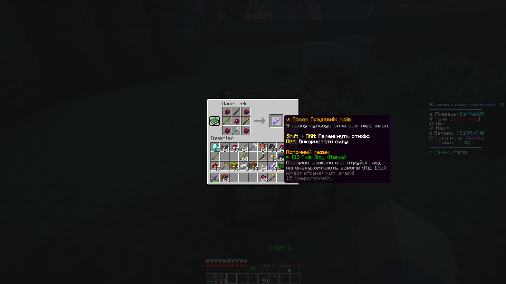
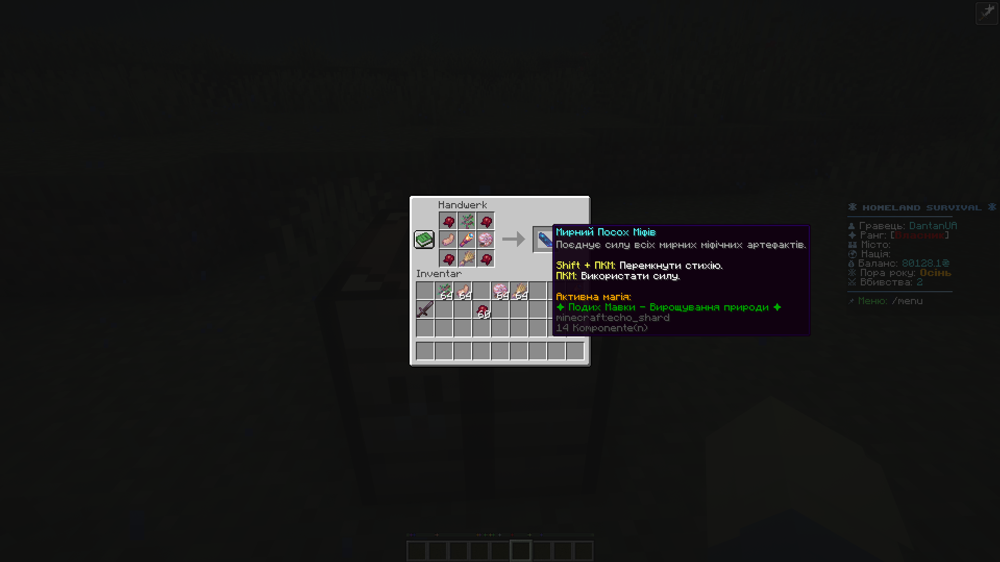

MYTHIC BOSSES
Ancient Ukrainian mythological entities and their legendary artifacts
🌸 Mavka (Forest Nymph)
0.5% chance while logging trees (Center/West). Pulls players close and conjures disorienting phantoms.
🌾 Polovyk (Field Spirit)
0.1% chance on croplands (South/East). Transmutes arrows into straw and binds feet with roots.
💧 Rusalka (Water Siren)
1% chance in water. Drains oxygen ashore — you drown unless submerged in water!
🧹 Konotop Witch
20% chance nightly near Konotop. Levitates, calls down lightning, and casts mirror mirages.
👿 Chort (Hell Demon)
Awakens from dungeon chests. Unleashes hellfire charges and corrodes Netherite armor.
🪬 Viy (Ancient Raid Boss)
Summoned via ritual altar. When his eyelids open 100%, his gaze disintegrates everything!
Construct a ritual altar within your town territory. Structure: an Enchanting Table at center, bordered by blocks of diamond, gold, iron, copper, and weeping obsidian adorned with soul lanterns (as pictured).
At night, hold the Heart of Chort and press Shift + Right Click on the Enchanting Table.

Slain bosses guarantee combat relics: Mavka's Living Branch, Polovyk's Searing Blade, Trident of the Abyss, Witch's Broom, and Heart of Chort. Forging them together creates the server's most devastating weapon — the Combat Staff of Ancient Myths.

With a 50% chance, bosses yield peaceful utility relics instead:
🌱 Mavka's Sprout (instant forest growth), 🌾 Polovyk's Pouch (harvests instant fields), 🧿 Witch's Talisman (purges debuffs/hunger), 🐚 Rusalka's Shell (permanent water breathing), 🧐 Monocle of Viy (highlights entities through walls).
Combine them with Hearts of Chort to craft the Peaceful Staff of Myths:
